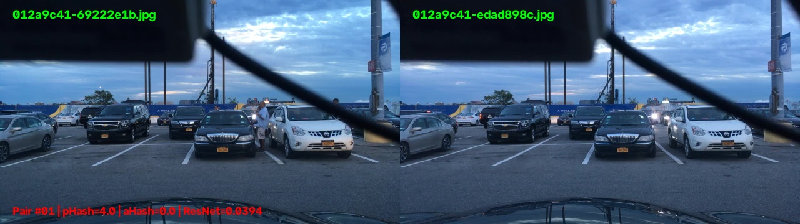

Tại Sao Chọn Dual-Stream Fast Deduplication Cho Bước 1?
Chứng minh bằng chứng khoa học thực nghiệm trên 7.000 khung hình BDD10K: Cơ chế kết hợp giữa pHash CPU siêu tốc (>390 FPS) và thuật toán giải quyết xung đột Keep-Most-Vehicles giúp đánh bại hoàn toàn các mạng học sâu ResNet50 về tốc độ, đồng thời bảo toàn trọn vẹn các mẫu học quý hiếm (người đi bộ & xe nhỏ) cho Active Learning.
Mô Phỏng Toàn Cảnh Hoạt Động Của Thuật Toán (Pipeline Simulation Player)
Trình diễn trực quan: 7.000 frame đổ vào → Stream 1 quét laser pHash → Stream 2 KMV soi kính lúp cứu người đi bộ → Xuất 6.994 ảnh duy nhất.
Chặng 1: Nạp 7.000 Khung Hình Thô Từ Camera Hành Trình
Băng chuyền tiếp nhận 7.000 khung hình (1280x720) qua 598 chuỗi video. Các frame chứa vô số khung hình tĩnh dư thừa khi dừng đèn đỏ và kẹt xe kéo dài.
Bấm vào các nút CHẶNG 1, 2, 3, 4 phía trên để tua trực tiếp đến phân cảnh giải thuật tương ứng trong video.
Bảng Đối Chuẩn Toàn Diện 6 Phương Pháp (Paper-Ready Leaderboard)
| Phương Pháp | Phần Cứng | Thông Lượng (FPS) | Độ Trễ | Human Precision | Human Recall | Human F1-Score | Bảo Toàn BBox |
|---|
Cổng Thẩm Định 34 Cặp Khung Hình Thực Nghiệm (Human Audit Gallery)
Mỗi cặp đều được đối chiếu mắt nhìn thực tế, ghi rõ 4 khoảng cách và giải thích lý do vì sao máy bắt nhầm hoặc đúng.
Tại Sao Keep-Most-Vehicles Cứu Sống Người Đi Bộ & Xe Nhỏ?
Khi xe dừng đèn đỏ nhưng có thêm người đi bộ bước vào khung hình (như bạn vừa phát hiện ở Cặp #01 và #03): Nếu dùng cơ chế vứt bỏ truyền thống (Keep-First hoặc Random-Drop), hệ thống sẽ đối mặt với thảm họa vứt nhầm khung hình có người!

Thuật toán tự động tra cứu BBox hoặc chạy YOLOv11 để đếm xe và người. Khung hình có thêm người đi bộ được chấm điểm cao hơn $\Rightarrow$ Bắt buộc giữ lại trong dataset, làm giàu mẫu học cho Active Learning.
Các phương pháp lọc trùng truyền thống chỉ vứt khung hình theo thứ tự thời gian. Nếu người đi bộ xuất hiện ở frame thứ 2, nó sẽ bị xóa vĩnh viễn, khiến mô hình xe tự hành bị mất cơ hội học phát hiện người đi bộ!
Thông Lượng FPS (Thang Logarit)
Proposed Method (397 FPS) vượt trội ResNet50 (29 FPS) gấp 14 lần trên CPU.
Độ Bền Dưới 5 Biến Đổi Quang Học
Khả năng bắt đúng cặp trùng khi xe rung lắc, chói sáng, nén JPEG, nhiễu đêm.
Tải Dữ Liệu Kiểm Toán & Tái Lập Thực Nghiệm
Toàn bộ kết quả thực nghiệm có thể tái lập 100% bằng 1 dòng lệnh duy nhất.
python scratch/execute_nb01.py # Tái lập toàn bộ 28 cells của Phase 01 Benchmark